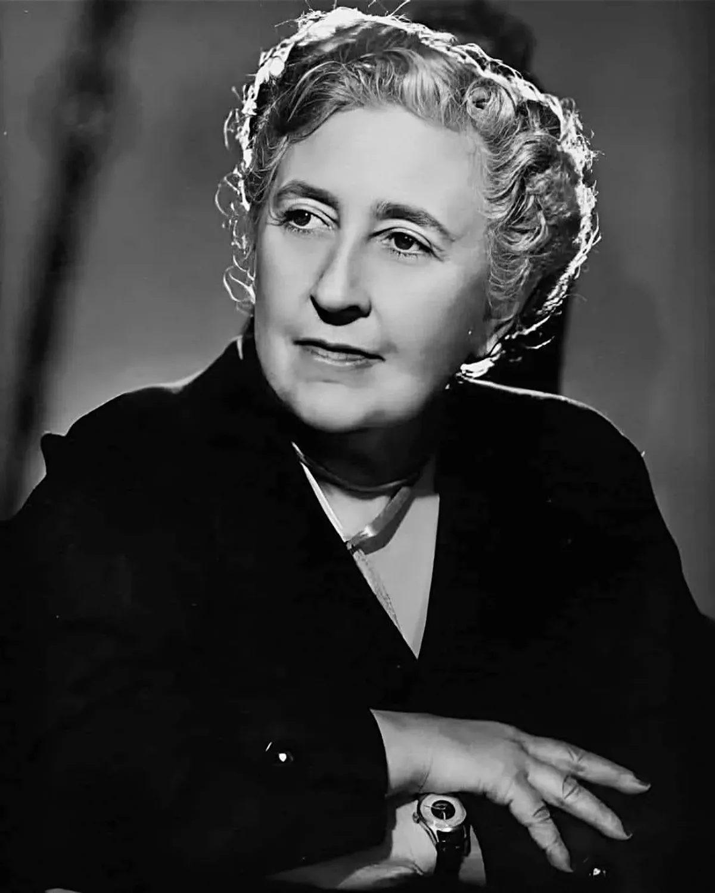
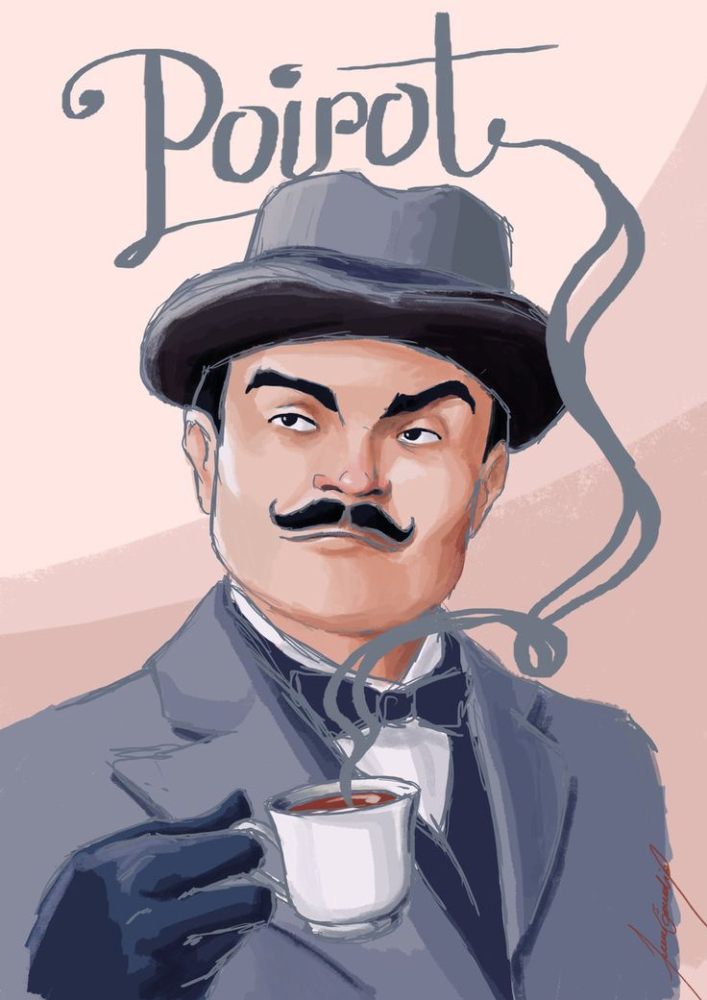
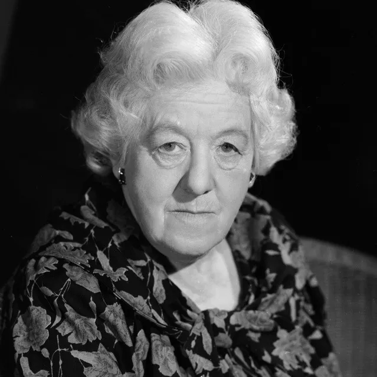
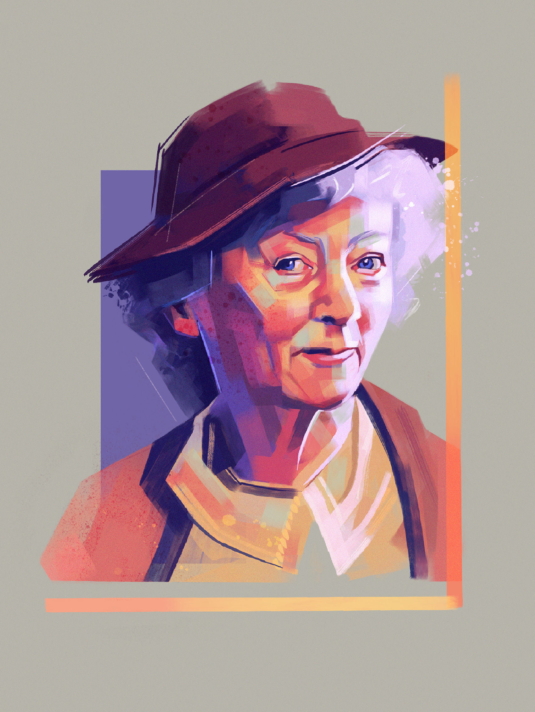

Agatha Christie
Queen of Crime
Agatha Christie was a British woman who became one of the greatest writers in the detective/crime fiction genre.
Agatha Mary Clarissa Miller was born in Torquay, England on September 15th in 1890, daughter of rich parents she was homeschooled by many tutors, learned to play piano and to sing, but passed most of her time writing poems and fables.
In 1912 she met her first husband, Archibald Christie, whose surname was adopted by Agatha when they married in 1914.

When WWI initiated, the same year she got married, Agatha joined The Red Cross as a volunteer. She helped as a nurse, in a temporary hospital in Torquay, assisted in surgeries and helped the wounded. In WWII she volunteered again.
In 1917, working as a nurse in England, she accepted a challenge from sister Magde, which was writing a crime fiction that the reader couldn't tell who was the murder until the final chapter. That challenge gave birth to her first book "The Mysterious Affair at Styles".
She didn't write only books, but also theater plays. In total she wrote 17 plays and the most famous is "The Mousetrap". The play was based in the radio play "Three Blind Mice" of twenty minutes and was expended by Agatha, adding extra characters and a plot.
If you want to know more about Agatha Christie there is a website called agathachristie.com, it has everything about her from her most known books and works to her childhood story.

"And Then There Were None (1939)"
Ten strangers are invited to an isolated island, and accused of past crimes, start dying one by one.

"Murder on the Orient Express (1934)"
Detective Hercule Poirot investigates a murder that happened on a luxury train, turning all the passengers into potential murderers.

"The Murder of Roger Ackroyd (1926)"
Roger Ackroyd was a man who knew too much. He knew someone was blackmailing his wife, but will never know who it was.
Hercule Poirot
"The greatest mind in Europe" a Belgian retired police officer for over 100 years since his creation, still one of the most known fictional detectives of all time.
He is a tidy little man, 5 feet 4 inches tall, and has a waxed moustache. More importantly he is extremely brainy.
David Suchet was the actor that gave life to Poirot in the cinemas for 25 years and was the most accurate one according to Agatha description. That's because he paid attention to every detail of the character.



Miss Marple
Miss Marple, a white-haired old lady, whose appearance is surprisingly effective for her job, because who would suspect that behind her love for knitting, gardening and gossip: she is "the finest detective God ever made".
Sir Henry Clithering, "The Body in the Library".
Margaret Rutherford starred in four movies as Miss Marple and was placed as the centre of the action. With her comic skills and strong character she became popular with the audience and many critics, except for Christie herself. Agatha respected the actress, but the later movies she acted in weren't like her novels anymore.
Agatha's uneasiness grew and later she wrote that Margaret Rutherford was a very fine actress, but was never in the least like Miss Marple.